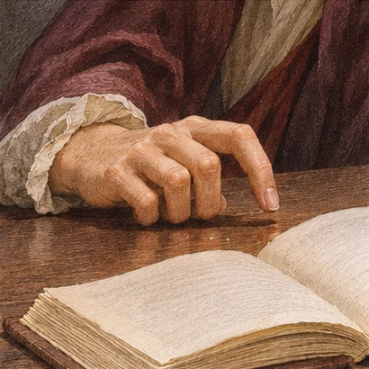

Endecasillabo piano
11 sillabe«Nel mezzo del cammin di nostra vita»
Dante Alighieri, Inferno, I, v. 1
Nelmezzodelcammindinostravìta
vì-ta · La decima sillaba è tonica; dopo di essa rimane una sillaba.
Lezione 2 di 8 · La forma
Che cosa hanno in comune un endecasillabo piano, uno tronco e uno sdrucciolo?

Apri gli approfondimenti e gli esercizi ↓
Appoggia un dito sul banco, come nella figura. Leggi il primo verso e batti un colpo su «còl-». La voce dà rilievo a quella sillaba; «-le» segue più lieve. Un verso è un’unità di ritmo che riconosci sulla pagina dal ritorno a capo. Ora proviamo a misurarlo.
Sèm¹ · pre² · cà³ · ro⁴ · mi⁵ · fu⁶ · que⁷ · st’èr⁸ · mo⁹ · còl¹⁰ · le¹¹. Leggi ora senza separare le sillabe. Se una parola termina per vocale e la seguente comincia per vocale, spesso le due vocali valgono una sola sillaba metrica: è la sinalefe.
| Uscita | Verso · accento finale evidenziato | Sillabe |
|---|---|---|
| Piana | Sempre caro mi fu quest’ermo còlle | 11 |
| Tronca | Sempre caro mi fu quel cielo blu | 10 |
| Sdrucciola | Sempre caro mi fu quel dì di nùvole | 12 |
È endecasillabo qualsiasi verso che ha come ultima sillaba tonica, cioè accentata, la decima.
La posizione dell’ultimo accento rimane la stessa; cambia il numero di sillabe che lo seguono.
«Nel mezzo del cammin di nostra vita»
Dante Alighieri, Inferno, I, v. 1
vì-ta · La decima sillaba è tonica; dopo di essa rimane una sillaba.
«A quest’ora che fai? Tosti il caffè:»
Guido Gozzano, La signorina Felicita ovvero la Felicità
caf-fè · L’ultima sillaba è tonica. sti_il è una sinalefe.
«M’apparisti così, come in un cantico»
Guido Gozzano, La signorina Felicita ovvero la Felicità
càn-ti-co · L’accento cade sulla terzultima sillaba; me_in è una sinalefe.
Nel verso le sillabe si contano secondo la pronuncia poetica. Due vocali vicine, appartenenti a parole diverse, possono essere pronunciate come una sola sillaba metrica: è la sinalefe.
sti + il → sti_il
La vocale finale di Tosti e quella iniziale di il si contano insieme.
me + in → me_in
Nella scansione dell’esempio, la sinalefe unisce come e in.
Per ora basta riconoscere la sinalefe. Altri fenomeni metrici — dialefe, sineresi e dieresi — si incontreranno nei testi quando serviranno.
La misura si riconosce dalla posizione dell’ultimo accento tonico. La quantità di sillabe riportata nella tabella vale per i versi piani.
| Verso | Definizione | Esempio | Autore |
|---|---|---|---|
| Decasillabo | 9ª tonica · 10 sillabe | «Ritornava una rondine al tetto» | G. Pascoli |
| Novenario | 8ª tonica · 9 sillabe | «trafitto da un raggio di sole» | S. Quasimodo |
| Ottonario | 7ª tonica · 8 sillabe | «lungo un dolce ruscelletto» | G. Chiabrera |
| Settenario | 6ª tonica · 7 sillabe | «nella sera autunnale» | D. Campana |
| Senario | 5ª tonica · 6 sillabe | «nel tempo che tace» | G. Pascoli |
| Quinario | 4ª tonica · 5 sillabe | «Viva Arlecchini» | G. Giusti |
| Quaternario | 3ª tonica · 4 sillabe | «Sé d’amore» | T. Solera |
| Trisillabo | 2ª tonica · 3 sillabe | «La morte» | G. Ungaretti |
| Bisillabo | 1ª tonica · 2 sillabe | «piano» | G. Ungaretti |
Un verso tronco ha una sillaba effettiva in meno del corrispondente verso piano; un verso sdrucciolo ne ha una in più. La posizione dell’ultima sillaba tonica resta il criterio decisivo.